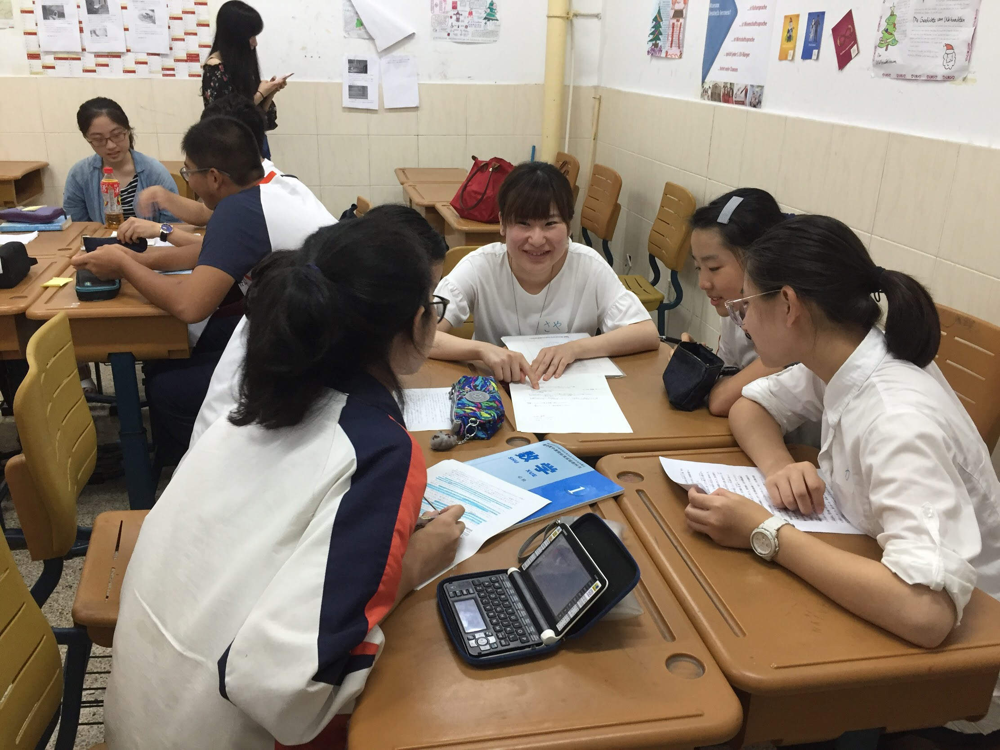
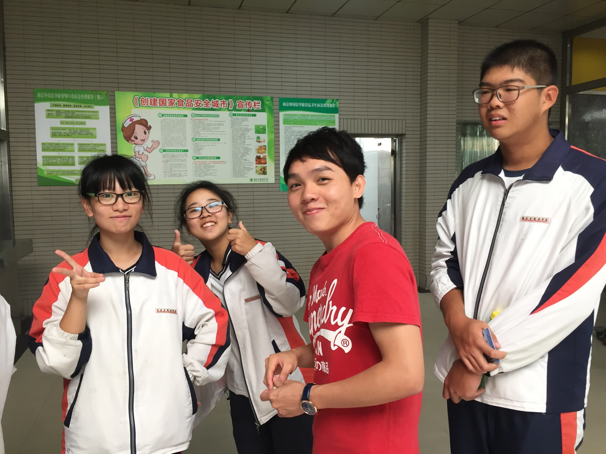

一週間で現地の高校に行って、ボランティアとして高校生たちに日本語や日本文化を教えます。また、学生の家にホームステイをすることと料理パーティーなどの活動を通じて、中国文化をより深く体験できます。
さらに、高校生との共同プロジェクト（プレゼンテーション）を通じて、中国語のレベルの向上を図るだけでなく、リーダーシップも涵養できます。
早稲田大学紅葉会は早稲田大学政治経済学部で発祥された中国人留学生を主体とする学生団体です。活動内容として、様々なイベントを企画することにより留学生と日本人学生を接触する機会を増加し、中国人留学生や他の学生たちの大学生活全般をサポートするという理念を付けております。
応募資格：
大学在籍中、文化交流に関心を持つこと
＊学校・専攻・学年・語学力・海外渡航経験は不問です。
＊渡航の前に、保護者の方の同意が全員必要となります。
＊募集人数は6名程度です。
68000円-70000円
＊航空機の運賃の変動幅があるため、具体的な金額は合格連絡の際にお伝えします。
旅行代金に含まれるもの
旅行代金に含まれないもの
＊7.2までに参加費を振り込まない場合は、プログラムを辞退されるとみなします。
南京外国語学校でのボランティア活動は私の夏休みの中で最も刺激的で貴重な体験であった。南京外国語学校の高校生の日本語力の高さには心底驚いた。私も英語を長い間勉強しているのに、彼らのように上手に会話することができず、自分の言語学習について見直さなければならないと痛感した。
このボランティア活動で私は高校1年生4人と中国の少子高齢化とその対策についてディスカッションをし、プレゼンを作り上げた。短い準備期間にもかかわらず、それなりのプレゼンを完成させることができたのは間違いなく彼らの議論に対する積極性のおかげである。
私は今までリーダーになるということがほとんどなかった。いつも誰かが意見をまとめてくれるのを待って、自分は聞いてるだけだった。このボランティア活動では、自分がリーダーになるという貴重な体験をできて本当に良かった。これからはもっと積極的に、人をまとめていけるような人間になりたい。本当に今回のボランティア活動に参加できて良かった。
私達ボランティアには高校生たちの発言を促したり宿題をチェックしたりと、最終 発表に向けてチームを引っ張るリーダーの役割を与えられます。私はそういったリーダーの経験があまりなく当初は不安に思っていました。しかし南京の高校生たちは活動に熱心で、すぐに打ち解けて日本語で親しげに話しかけてくれる優しい子たちでした。そんな高校生たちと話し合いを重ねたり、中国語学習会のメンバーや南京で行動を共にしていた紅葉会の方ともお互いの状況について報告したりと、わくわくしながら最終発表の日を迎えることができました。また指示を的確に出すことなど自分の課題が見つかったので、将来の夢である教員を目指すうえでこの経験を大切にしたいと思っています。
南京外国語学校でのボランティア活動に参加した理由は自分の中国の文化をより深く知りたいからです。自分自身が成長できたならばなおいいなと思います。日本語が母語ではない私にとって多少不便なところもあったが、ほとんどの時間は学生達のプレゼン作りを指導するためだったので、授業の内容は先に自分で準備することができます。日本語学科の学生達は大変優秀で、まだ高校一年生とはいえ、既に日本語能力試験の２級を目指しています。ホストファミリーの人達も大変親切だし、まるで自分の家族として私の面倒を見てくれました。また機会があれば、南京で出会った家族ともう一度会いたいと思います。
お問い合わせ:hongyehui2017@gmail.com